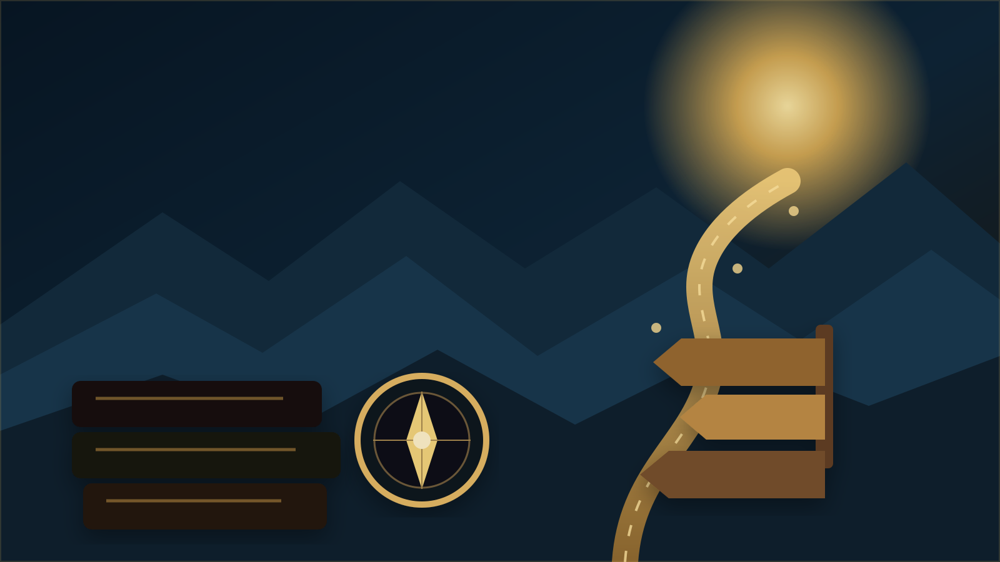

درخواست اولیه خدمت یا مشاوره
ابتدا مسئله، هدف و نوع کمک را روشن کنیم؛ سپس درباره جلسه، بازبینی یا همکاری تصمیم بگیریم.
این درگاه فقط برای دانشآموزان نیست. درخواست پژوهشگر، معلم یا مؤسسه نیز میتواند از همین مسیر وارد شود، اما در مرحله نخست فقط اطلاعات حداقلی لازم است. پرونده دانشآموز، مدارک هویتی و متن محرمانه مقاله تا پیش از تعیین دامنه و روش امن تبادل ارسال نمیشوند.
درخواست اولیهاطلاعات حداقلی

مرحله نخست
نوع مسئله خود را انتخاب کنید.
01
مشاوره تحصیلی
برای مسئلههای آموزشی، برنامهریزی، تغییر مسیر، تحلیل وضعیت و تصمیمهای تحصیلی.
02انتخاب رشته
برای مقایسه رشتهها و دانشگاهها با توجه به امکان، تناسب، ترجیح و شرایط واقعی فرد.
03مشاوره کنکور
برای برنامهریزی، تحلیل آزمونها، اصلاح مسیر و مدیریت فشار و زمان.
04استعدادیابی
برای شناخت چندمنبعی توانمندیها و ظرفیتهای رشد، نه دریافت یک برچسب قطعی.
05تحلیل کارنامه
برای فهم الگوی عملکرد و تبدیل نمرهها و نتایج به سؤالها و تصمیمهای قابل استفاده.
06مشاوره والدین
برای کمک به خانواده در همراهی با تصمیم فرزند بدون مقایسه، فشار یا جایگزینشدن با انتخاب او.
07خدمات پژوهشی و دانشگاهی
برای بازبینی مقاله، ویرایش دانشگاهی، مشاوره پژوهش، انتشار، پاسخ به داوران یا مسیر علمی.
08همکاری آموزشی و سازمانی
برای کارگاه، آموزش معلم، مشاوره آموزشی، سخنرانی یا پروژه سازمانی با دامنه مشخص.
فعلاً چه چیزی ارسال شود؟
در ایمیل اولیه فقط اطلاعات حداقلی را بنویسید.
نوع خدمتمشاوره، خدمت پژوهشی، توسعه حرفهای، همکاری سازمانی یا مسئله دیگری که باید بررسی شود.
نقش و زمینهمثلاً دانشآموز، والد، پژوهشگر، معلم یا نماینده مؤسسه؛ بدون ارسال اطلاعات اضافی.
سؤال اصلیدر چند جمله توضیح دهید مهمترین تصمیم یا نگرانی فعلی چیست.
مهلت مهماگر تصمیم به زمان مشخصی وابسته است، تاریخ آن را ذکر کنید.
برای حفظ حریم خصوصی، در ایمیل اولیه کارنامه، شناسنامه، مدارک هویتی، فایلهای پزشکی، متن محرمانه مقاله یا اسناد حساس ارسال نکنید. اگر بررسی مدرکی لازم باشد، پس از تعیین روش مناسب، فقط همان مدرکی درخواست میشود که به مسئله مرتبط است.
فرم آنلاین
درخواست خود را برای ارسال با ایمیل آماده کنید.
موضوع درخواست و سؤال اصلی را بنویسید، پیشنویس را بررسی کنید و سپس با ایمیل خودتان ارسال کنید.
مسیر کامل مشاوره
درخواست، رزرو، جلسه و پیگیری در یک مسیر روشن انجام میشوند.
1درخواست اولیهتعریف مسئله و نوع خدمت.
2تریاژتعیین اطلاعات لازم و مناسبترین نوع جلسه.
3رزروانتخاب زمان مناسب با ثبت منطقه زمانی.
4پرداختدر صورت نیاز، از مسیر تأییدشده و قابل رهگیری.
5جلسه و پروندهثبت خصوصی نکات و توصیهها.
6پیگیریبازبینی مسیر در صورت نیاز.
در مرحله اولیه، رمز عبور، کارنامه، مدارک هویتی یا اطلاعات خصوصی غیرضروری ارسال نکنید.